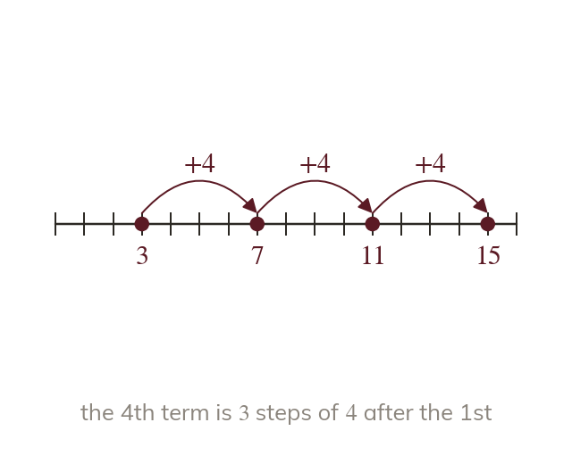
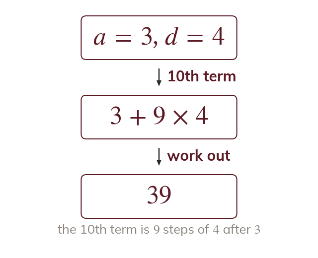
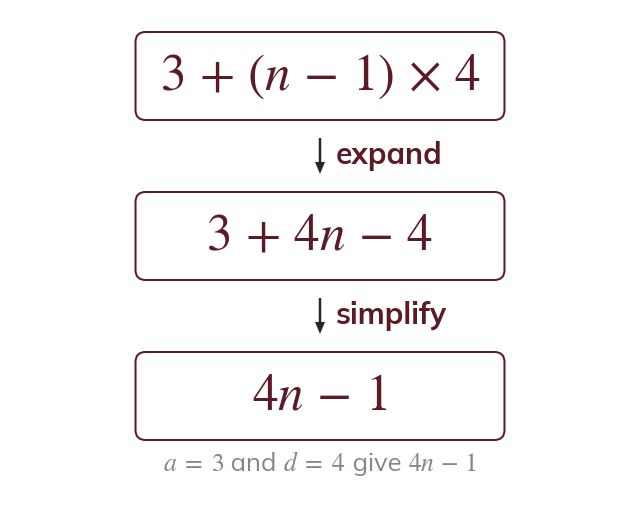
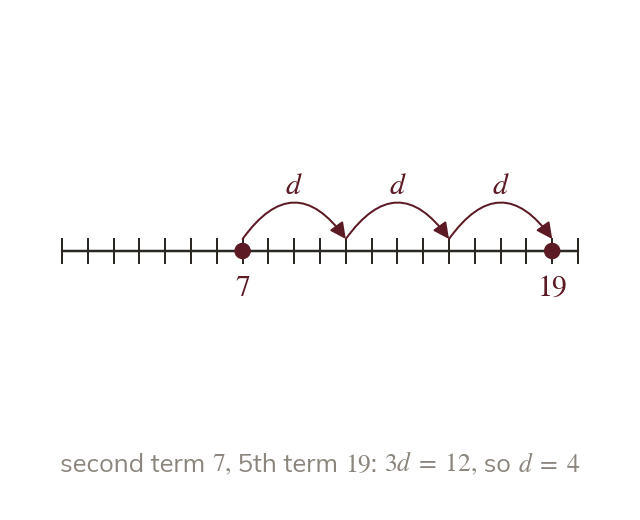
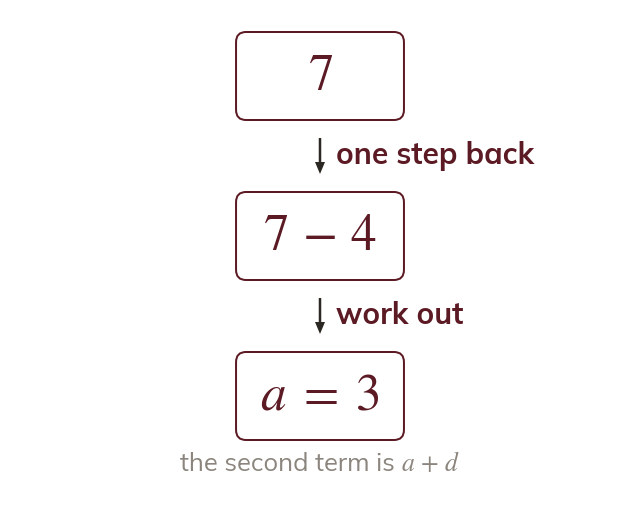

Count the steps
The 4th term is steps of d after the first. The nth term is steps after it.
Exam questions name a sequence by its first term a and its common difference d. One formula turns those two numbers, or any two terms, into every term of the sequence.
Work down the page at your own pace. Write every answer in your book first, then click to check it.
Read each card, then follow the worked examples one step at a time.

The 4th term is steps of d after the first. The nth term is steps after it.

So the nth term is - 1)d. The bracket counts the steps.

Expanding gives Both forms give the same terms.
Pick an answer. If it's wrong, the feedback tells you which mistake it was.
Read each card, then follow the worked examples one step at a time.

From the second term to the 5th term is steps of So is their difference.

With d known, step back from either term to the first. The second term is one step after a.
Pick an answer. If it's wrong, the feedback tells you which mistake it was.
Finished? Next lesson: 10H.1.4 Arithmetic Series.
For each skill, tap the one that is true for you today. Your Revise pages start with anything you mark Not yet.
Your ratings are saved on this device only.
Log in, then search for a code to practise that skill.
Videos, worksheets and more on each part of this lesson.